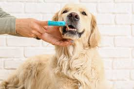
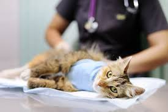
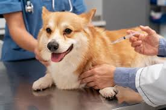

Welcome to PawStreet Veterinary Clinic
Our Services
Wellness Exams
Regular wellness exams are essential for keeping your pet healthy. Our experienced veterinarians will perform a comprehensive health check-up to ensure your pet is in good condition.

Dental Care
Our dental care services include cleaning, polishing, and extractions if necessary. We help maintain your pet's oral hygiene to prevent dental diseases.

Pet Surgery
We provide a range of surgical services, from routine spaying and neutering to more complex procedures. Our team ensures your pet receives the best surgical care.

Vaccinations
Vaccinations are crucial for preventing serious illnesses. We offer a complete range of vaccinations tailored to your pet's needs.